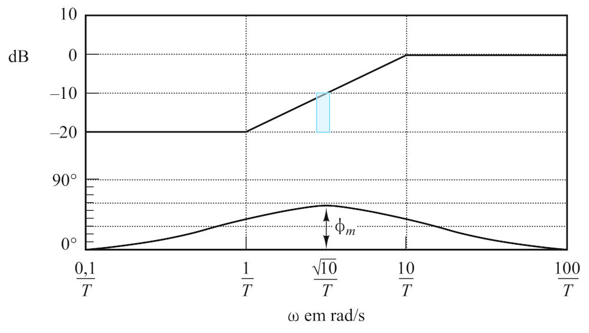
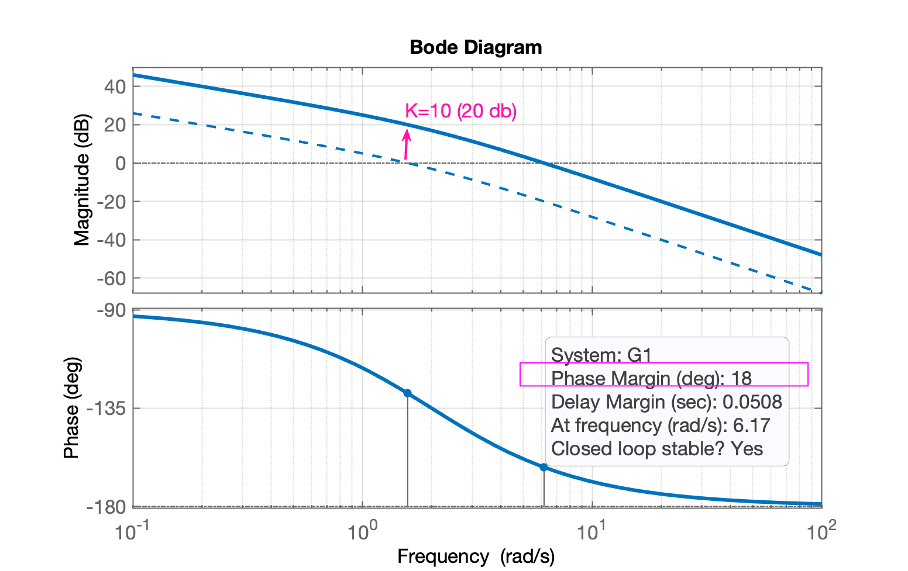

Aula de 14.11.2019
Equação genérica:
\[ C(s)=K \; \dfrac{s+a}{s+b} \]

Baseado em: Karl Johan Aström, Richard M. Murray; Feedback Systems: An Introduction for Scientists and Engineers, Princeton University Press, Princeton, New Jersey, 2008.
Uma equação genérica para este controlador pode ser:
\[ C(s)= \overbrace{\left( \dfrac{\omega_p}{\omega_z} \right)}^{K} \cdot \dfrac{(s+\omega_z)}{(s+\omega_p)} \]
que leva ao diagrama de Bode mostrado à seguir:

O gráfico anterior foi obtido via matlab:
>> G_lead=tf(100*[1 1],[1 100]);
>> zpk(G_lead)
ans =
100 (s+1)
---------
(s+100)
Continuous-time zero/pole/gain model.
>> figure; bode(G_lead)Detalhes:
Vantagens deste controlador (ou objetivos pretendidos com adoção do mesmo):
O problema é que esta eq. genérica não permite um estudo mais aprofundado ou facilita o projeto e aplicação deste controlador numa planta. A fim de melhorar a contribuição causada pela adoção deste controlador, modificaremos a eq. genérica do mesmo para:
\[ C(s)=K_c \; \alpha \; \dfrac{(\tau s+1)}{(\alpha \tau s +1)} = K_c \; \dfrac{ \left( s+\dfrac{1}{\tau} \right) }{ \left( s+\dfrac{1}{\alpha \tau} \right) } \quad (0 < \alpha < 1) \]
Ref.: Katsuhiko Ogata, Engenharia de controle moderno, 5a. ed., p. 822. São Paulo: Pearson Prentice Hall, 2010; In [Capítulo 7 – Análise e projeto de sistemas de controle pelo método de resposta em frequência];
Detalhes:
A eq. anterior rende o mesmo tipo de diagrama de bode que o já mostrado inicialmente, mas permite inferir informações mais interessantes para realização de um projeto adotando este tipo de controlador:

Esta figura foi obtida usando-se matlab:
>> lead=tf(10,[1 1],[1 10])
>> zpk(lead)
ans =
10 (s+1)
--------
(s+10)
Continuous-time zero/pole/gain model.
>> figure; bode(lead)A próxima figura ressalta detalhes envolvendo o controlador por avanço de fase:

Esta figura ressalta as contribuições e alterações que serão provocadas no diagrana de Bode quando um controlador por Avanço de Fase for introduzido num sistema.
Notar:
Nesta frequencia, a contribuição máxima trazida corresponde à relação: \[ \sin{\phi_m}=\dfrac{\left( \dfrac{1-\alpha}{2} \right)}{\left( \dfrac{1+\alpha}{2} \right)}=\dfrac{1-\alpha}{1+\alpha} \] de onde podemos isolar \(\alpha\): \[ \alpha=\dfrac{1 - \sin{ \phi_m }}{1 + \sin{ \phi_m } } \]
Note que na frequencia \(\omega_m\) o controlador por avanço de fase, vai acrescentar um ganho ao sistema no valor de: \[ = \dfrac{1}{\sqrt{ \alpha} } \quad \text{(em valores absolutos)} \] ou \[ = 20 \log_{10} \left( \dfrac{1}{ \sqrt{\alpha} } \right) \quad \text{(dB)} \]
Primeiramente defina o ganho \(K\) que deve ser incorporado ao sistema em MF para que o mesmo atenda aos requisitos de erro em regime permanente especificados para o mesmo. Na prática, fazemos:
\[ K_c \; \alpha = K \]
\[ C(s)=K \; \dfrac{(\tau s + 1)}{(\alpha \tau s + 1)} \]
A \(FTMA(s)\) fica: \[ FTMA(s)=C(s) \cdot \underbrace{G(s)}_{\text{planta}} = K \cdot \dfrac{(\tau s + 1)}{(\alpha \tau s + 1)} \cdot G(s) = \dfrac{(\tau s + 1)}{(\alpha \tau s + 1)} \cdot KG(s) = \dfrac{(\tau s + 1)}{(\alpha \tau s + 1)} \cdot G_1(s) \] onde: \(G_1(s)=K \cdot G(s)\).
Então, determine o ganho \(K\) a fim de satisfazer o requisito de erro estático desejado.
Construir o Diagrama de Bode, com \(K\) ajustado. Avaliar a margem de fase.
Determinar o avanço de fase necessário (que deve ser acrescentado ao sistema). Adicionar \(5^o\)à \(12^o\)ao ângulo assim determinado porque a adição do compensador, desloca um pouco a frequência de cruzamento de ganho (\(\omega_c\)) para a direita, diminuindo margem de fase.
Determinar fator de atenuação \(\alpha\). Definir a freq. na qual o bloco não compensado passa pelo ponto \(G_1(j \omega)=-20\log { \left( 1/\sqrt{\alpha} \right) }\). Selecionar esta freq. como nova freq. de cruzamento de ganho (\(\omega_c\)), que corresponde à \(\omega_m=1/(\sqrt{\alpha} \; \tau)\).
Determinar as frequências do controlador: \[ \text{zero } \rightarrow \omega_z=\dfrac{1}{\tau} \] \[ \text{polo } \rightarrow \omega_z=\dfrac{1}{\alpha \; \tau} \]
Usando o valor de \(K\) determinado no item (1) e o de \(\alpha\) na etapa (4), calcular a constante \(K_c = \dfrac{K}{\alpha}\).
Verificar a margem de ganho para se certificar de que ela é satisfatória. Se não for, repita todo o processo modificando a localização do pólo e zero do controlador até alcançar o resultado desejado.
Exemplo\(_1\): Considere uma planta caracterizada pela equação: \[ G(s)=\dfrac{4}{s(s+2)} \] deseja-se projetar un compensador para o sistema, de modo que a constante de erro estático de velocidade, \(K_v\), seja \(20 \; (s^{-1})\), a margem de fase seja pelo menos \(50^o\) e a margem de ganho seja pelo menos 10 db.
Exemplo 7.26 extraido de Ogata, pag. 455
Solução
1) Primeiramente temos que ajustar o ganho \(K\) do sistema em MF para atender às especificações do projeto em regime permanente ou seja, propiciar a constante de erro estático de velocidade requerida:
\[ K_v=\lim_{s \to 0} s \; FTMA(s) = \lim_{s \to 0} s \cdot \dfrac{(\tau s + 1)}{(\alpha \tau s + 1)} \cdot G_1(s) \] \[ K_v=\lim_{s \to 0} \dfrac{ s \; 4 \; K}{ s \; (s+2)} = 2K = 20 \quad \therefore \quad K=10 \]
2) Traçamos o diagrama de Bode já considerando \(K=10\):
>> G1=tf(40, poly([ 0 -2]));
>> zpk(G1)
ans =
40
-------
s (s+2)
Continuous-time zero/pole/gain model.
>> bode(G1)Diagrama de Bode para \(G_1(s)\):

3) Analisando o diagrama de Bode anterior percebemos que a margem de fase "original" do sistema, realmente é muito baixa, apenas \(18^o\) (o que implica overshoots elevados, fortes oscilações e \(t_s\) bastante alongado). Como é desejado margem de fase mínima de \(50^o\) podemos inicialmente considerar o quanto é necessário aumentar esta margem de fase:
>> 50-18
ans =
32Mas também temos que considerar que o acréscimo do controlador de avanço na planta, afeta um pouco tanto o diagrama de fase quanto o de ganho do sistema original. Para compensar esta ligeira distorção se costuma acrescentar de \(5^o\) à \(12^o\) na fase:
>> 32+5
ans =
37Então, necessitamos que nosso controlador avance a fase em \(37^o\).
4) Determinamos o fator \(\alpha\), com base em:
\[ sen{\Phi_m}=\dfrac{\left( \dfrac{1-\alpha}{2} \right)}{\left( \dfrac{1+\alpha}{2} \right)}=\dfrac{1-\alpha}{1+\alpha} \]
de onde podemos isolar \(\alpha\):
\[ \alpha=\dfrac{1 - \sin{ \phi_m }}{1 + \sin{ \phi_m } } \]
>> aux=sin(37*pi/180) % lembrar que Matlab trabalha com radianos e não graus
aux =
0.6018
>> alpha=(1-aux)/(1+aux)
alpha =
0.2486Agora falta considerar (e compensar) o ganho extra adicionado pelo controlador na frequencia \(\omega_m\), que é igual à \(=20\log { \left( 1/\sqrt{\alpha} \right) }\). Note que a nova frequencia da margem de fase (onde o diagrama de Bode passar po 0 dB) será ligeiramenta deslocada para a direita. Alguns autores chamam este novo ponto de frequencia, de frequência de "cruzamento de ganho" ou \(\omega_c\). O que se quer dizer é que, se queremos manter a margem de fase requerida, o ganho do sistema nesta frequencia, deveria ser de 0 dB, o que não ocorre porque a introdução do compensador de avanço de fase faz "subir" o ganho do sistema compensado. A idéia então é compensar esta subida, identificando a nova frequencia onde o diagrama de Bode de \(G_1(s)\) "caia" o mesmo tanto que o compensaador fará "subir" o ganho.
Primeiramente temos que calcular o impacto no gannho causado pelo acréscimo do compensandor de Avanço:
>> atenuacao_ganho=1/sqrt(alpha)
atenuacao_ganho =
2.0057
>> 20*log10(atenuacao_ganho)
ans =
6.0453Temos então que "caçar" este valor de ganho no diagrama de Bode. No caso, notar que obteremos um valor aproximado já que o matlab não calcula todos os valores possíveis de ganho para compor o diagrama de Bode. O matlab varia a frequencia do diagrama de forma não linear, logarítmica quando se usa a função bode(.). Neste caso, percebemos, via Datatips que temos acesso a 2 dados próximos da atenução desejada de 6,04 dB:
A frequencia na qual \(|G_1(j \omega)|_{\text{dB}} \approx -6.0453 \text{ (dB)}\), é aproximadamente \(\omega_c \approx 9\) (rad/s).
5) De posse de \(\omega_c\) e \(\alpha\), agora podemos determinar as frequencias para o zero e para o polo do controlador:
\[ \text{zero } \rightarrow \omega_z=\dfrac{1}{\tau} \] \[ \text{polo } \rightarrow \omega_z=\dfrac{1}{\alpha \; \tau} \]
Notar que não necessitamos calcular \(\tau\), já que:
\[ \omega_c = \omega_m' = \dfrac{1}{\sqrt{\alpha} \; \tau} \]
então:
\[ \text{zero } \rightarrow \omega_z=\dfrac{1}{\tau} = \sqrt{\alpha} \cdot \omega_c \] \[ \text{pólo } \rightarrow \omega_z=\dfrac{1}{\alpha \; \tau} = \dfrac{\omega_c}{\sqrt{\alpha}} \]
>> % wm (ou wc) final considerando Pm desejado fica em
>> wm=9 % rad/s
wm =
9
>> zero=sqrt(alpha)*wm
zero =
4.4872
>> polo=wm/sqrt(alpha)
polo =
18.0512
>> % Construindo a eq. do Controlador de Avanço
>> C=tf( [1 zero], [1 polo] );
>> zpk(C)
ans =
(s+4.487)
---------
(s+18.05)
Continuous-time zero/pole/gain model.6) Notar que falta definir o ganho do controlador. Para tanto, lembrar que o ganho final da \(FTMA(s)=10\) (\(K=10\)) então:
\[ C(s)=K \cdot \dfrac{\left( s+ \frac{1}{\tau} \right)}{\left( s+ \frac{1}{\alpha \; \tau} \right)} = K_c \cdot \alpha \cdot \dfrac{(\tau s +1)}{(\alpha \tau s +1)} \] \[ G_1(s)=K \cdot G(s) \] então: \[ K_c = \dfrac{K}{\alpha} \]
>> K=10;
>> Kc=K/alpha
Kc =
40.2279
>> % Montando eq. final do Compensador, incluindo seu ganho:
>> C=tf( Kc*[1 zero], [1 polo] );
>> zpk(C) % eq. final do Lead com seu ganho
ans =
40.228 (s+4.487)
----------------
(s+18.05)
Continuous-time zero/pole/gain model.7) Avaliando o resultado final obtido:
>> G=tf(4, poly( [0 -2] ) );
>> zpk(G) % eq. original da planta
ans =
4
-------
s (s+2)
Continuous-time zero/pole/gain model.
>> ftma=C*G;
>> figure; bode(G, G1, C, ftma)
>> legend('G(s)', 'G1(s)', 'C(s)', 'ftma(s)')
>> O que gera o Diagrama de Bode final:
No diagrama de Bode anterior é possível se observar:
Exemplo\(_2\): Lead para controle posição de um motor CC.
O circuito elétrico da armadura e o diagrama do corpo livre do rotor são mostrados na figura a seguir.

Neste exemplo, assumiremos os seguintes valores para os parâmetros físicos. Esses valores foram obtidos por experimento de um motor real no laboratório de controle de graduação de Carnegie Mellon.
O torque do motor, \(T\), está relacionado à corrente da armadura, \(i\), por um fator constante \(K_t\). A f.e.m. contra, \(e\), está relacionada à velocidade de rotação, \(\dot{\theta}\) pelas seguintes equações:
\[ T = K_t \cdot i \]
\[ e = K_t \cdot \dot{\theta} \]
No sistema internacional de unidades, \(K_t\) (constante da armadura) é igual a \(K_e\) (constante do motor).
A partir da figura anterior, podemos escrever as seguintes equações baseadas na lei de Newton combinada com a lei de Kirchhoff:
\[ J \ddot{\theta} + b \dot{\theta} = K \; i \]
\[ K \dfrac{\partial i}{\partial t} + R \; i = V - K \; \dot{\theta} \]
Usando transformadas de Laplace, as equações acima podem ser expressas em termos de \(s\):
\[ s(Js+b)\Theta(s)=KI(s) \]
\[ (Ls+R)I(s)=V-Ks\Theta(s) \]
Ao eliminar \(I(s)\), podemos obter a seguinte função de transferência, onde a velocidade de rotação é a saída e a tensão é uma entrada:
\[ \dfrac{\Theta(s)}{V(s)}=\dfrac{K}{(Js+b)(Ls+R)+K^2} \]
No entanto, neste exemplo, veremos a posição como sendo a saída. Podemos obter a posição integrando a velocidade, \(\dot{\theta}\), portanto, apenas precisamos dividir a função de transferência por \(s\):
\[ \dfrac{\Theta(s)}{V(s)}=\dfrac{K}{ s[(Js+b)(Ls+R)+K^2] } \]
e o diagrama de blocos do sistema se parece com:

Com uma referência degrau de 1 rad/s, os critérios de projeto são:
Obtendo o diagrama de Bode original:
>> J=3.2284E-6;
>> b=3.5077E-6;
>> K=0.0274;
>> R=4;
>> L=2.75E-6;
>> num=K;
>> den=[(J*L) ((J*R)+(L*b)) ((b*R)+K^2) 0];
>> G=tf(num,den)
>> zpk(G)
ans =
3.0862e+09
------------------------
s (s+1.454e06) (s+59.23)
Continuous-time zero/pole/gain model.
>> % Falta acrescentar o integrador para controle de posição
>> I=tf(1,[1 0])
I =
1
-
s
Continuous-time transfer function.
>> % incorporando ao modelo:
>> G=I*G;
>> zpk(G)
ans =
3.0862e+09
--------------------------
s^2 (s+1.454e06) (s+59.23)
Continuous-time zero/pole/gain model.
>> % Calculando alguns valores para algum "feeling" à respeito deste sistema...
>> % contante de tempo elétrica:
>> 1/1.454E6
ans =
6.8776e-07 % segundos
>> % = 0.6878 micro-segundos!
>> % constante de tempo mecânica:
>> 1/59.23
ans =
0.0169
>> ans*1000
ans =
16.8833 % mili-segundos
>> % conclusão: trata-se de um pequeno motor CC
>>
>> % Aproveitamos para levantar dados numéricos de Bode usando o próprio Matlab:
>> [Gm,Pm,Wcg,Wcp] = margin(G)
Warning: The closed-loop system is unstable.
> In ctrlMsgUtils.warning (line 25)
In DynamicSystem/margin (line 65)
Gm =
0
Pm =
-5.7565
Wcg =
0
Wcp =
5.9703
>> O diagrama de Bode para esta função transferência rende:

Perecebe-se uma margem de fase (original) muito baixa. Apenas \(\phi_m=5,76^o\).
Atendendo à especificações de ganho e margem de fase e design do controlador, temos:
Lembrando das equações:
\[ \zeta=\dfrac{ -\ln( \%OS/100 ) }{ \sqrt{ \pi^2 + \ln^2( \%OS/100 ) } } \] e \[ \phi_m = \tan^{-1} \dfrac{2 \zeta}{ \sqrt{ -2\zeta^2 + \sqrt{ 1 + 1\zeta^4} } } \] e \[ \omega_{BW}=\omega_n \sqrt{ (1 - 2 \zeta^2) + \sqrt{ 4 \zeta^4 - 4 \zeta^2 + 2}} \] ou: \[ \omega_{BW}=\dfrac{4}{t_s \; \zeta} \sqrt{(1-2\zeta^2)+\sqrt{4\zeta^4-4\zeta^2+2}} \]
Usando matlab para levantar estes valores, teremos:
>> OS=16;
>> zeta=(-log(OS/100))/(sqrt(pi^2+(log(OS/100)^2)))
zeta =
0.5039
>> Pm_d=atan2(2*zeta, sqrt(-2*zeta^2 + sqrt( 1+4*zeta^4) ) )
Pm_d =
0.9100
>> Pm_d_deg=Pm_d*180/pi % para obter valor em graus (e não em radianos)
Pm_d_deg =
52.1379
>> % O diagrama de Bode deveria cair 3dB à partir de w_BW:
>> w_BW=(4/(0.04*zeta))*sqrt((1-2*zeta^2)+sqrt(4*zeta^4-4*zeta^2+2))
w_BW =
251.5743
>> % Realizando alguns cálcuos preliminares
>> % respeito ao avanço de fase necessário:
>> Pm_d_deg-Pm
ans =
57.8945
>> ans+5
ans =
62.8945
>> % Prevendo ajuste de ganho eem G(s) para respeitar -6,2 dB em w_BW=251 rad/s
>> (79.1+75.1)/2
ans =
77.1000
>> ans-6.02 % considerando + 6,02 dB do Lead
ans =
71.0800
>> Comparando os requisitos exigidos com o diagrama de Bode original do sistema percebemos que:

Observações pessoais:
Exemplo abandonado: acrescentaram ação integral no modelo do controle de velocidade do motor, acrescentando arbitrariamente um zero em \(s=60\) (rad/s).
Ao final no Exemplo da Carnegie Mellon, estão complicando o controlador, alcançando um sistema de 2a-ordem, muito provavelmente desnecessário. Últimas anotações:
>> zpk(G)
ans =
3.0862e+09
--------------------------
s^2 (s+1.454e06) (s+59.23)
Continuous-time zero/pole/gain model.
>> % Até aqui Ok com exemplo da Carnegie Mellon
>>
>> PM=80;
>> OS=16;
>> zeta=(-log(OS/100))/(sqrt(pi^2+(log(OS/100)^2)))
zeta =
0.5039
>> Pm_d=atan2(2*zeta, sqrt(-2*zeta^2 + sqrt( 1+4*zeta^4) ) )
Pm_d =
0.9100
>> Pm_d_deg=Pm_d*180/pi
Pm_d_deg =
52.1379
>>
>> wbw=(4/(0.04*zeta))*sqrt((1-2*zeta^2)+sqrt(4*zeta^4-4*zeta^2+2))
wbw =
251.5743
>> a=(1 - sin(PM*pi/180))/(1 + sin(PM*pi/180));
>> a
a =
0.0077
>> T=1/(wbw*sqrt(a))
T =
0.0454
>> numpil = conv([1 60],[T 1]);
>> denpil = [a*T 1];
>> pil=tf(numpil,denpil);
>> zpk(pil)
ans =
130.65 (s+60) (s+22.01)
-----------------------
(s+2876)
Continuous-time zero/pole/gain model.
>> ftma_pil=pil*G;
>> zpk(ftma_pil)
ans =
4.0321e11 (s+60) (s+22.01)
-----------------------------------
s^2 (s+1.454e06) (s+2876) (s+59.23)
Continuous-time zero/pole/gain model.
>> figure; bode(ftma_pil)
>> grid
>> save motor_position_carnegie_mellon
>> O diagrama de Bode deste "pil" rende:

Prof. Fernando Passold, em 15.11.2019